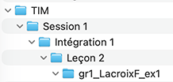
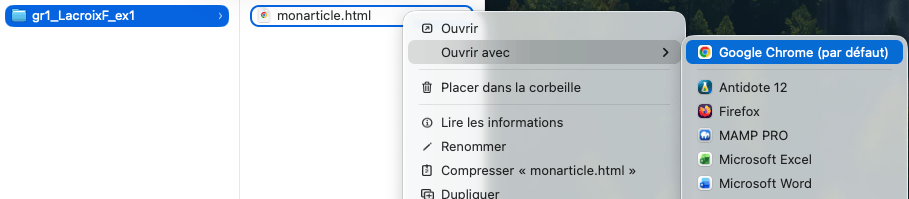
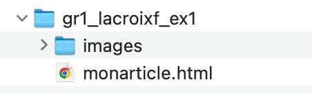
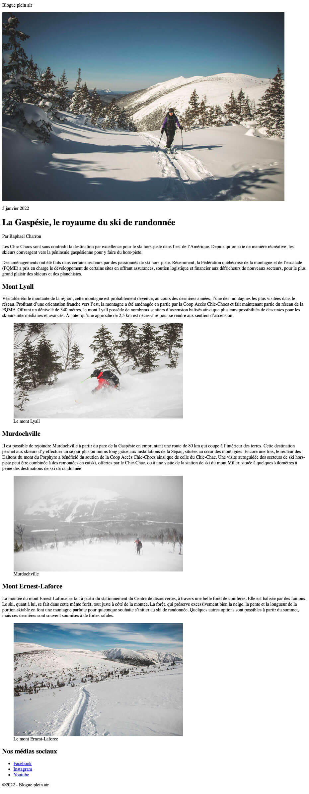
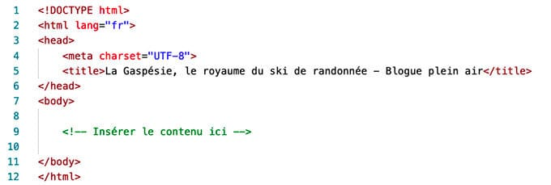
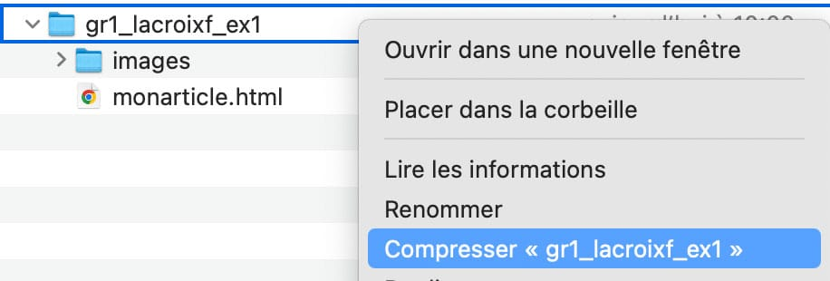
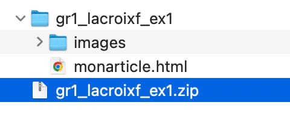

La structure des éléments
Les éléments ne se comportent pas tous de la même façon dans le flux du contenu. Deux grands types d'éléments se distinguent à cet égard.
Deux grands types d'éléments
Les éléments HTML se distinguent en deux grands types:
- les éléments de type bloc;
- les éléments de type en ligne (ou «au fil du texte»).
Les éléments de type bloc délimitent des blocs entiers comme des titres, des paragraphes, des listes, des citations, etc.
Les éléments de type en ligne sont prévus pour enrichir localement des portions de texte : hyperliens, renforcement, etc.).
Il en découle des spécificités d'affichage.
Exemple
Des éléments de type bloc écrits côte à côte dans le code HTML seront tout de même placés par défaut l'un sous l'autre par le navigateur graphique.
Par exemple, les deux éléments <p> écrits comme suit en HTML :
Code
<p>Premier paragraphe</p><p>Deuxième paragraphe</p>
Résultat dans un navigateur
Premier paragraphe
Deuxième paragraphe
Les éléments en ligne s'appliquent généralement à des portions de texte, tel que des groupes de mots dans une phrase. Par exemple : le renforcement d'une partie de texte avec la balise strong ou encore le balisage d'un acronyme ou d'une abbréviation avec abbr. La plupart des éléments en ligne ont des particularités d'affichage dans les navigateurs graphiques: par exemple, strong est affiché en gras, em est affiché en italique et code est affiché avec une police mono-espace. Mais d'autres éléments en ligne ne montrent aucune particularité à l'affichage.
Contenus autorisés selon les types de balises
- Un élément de type bloc peut contenir un ou plusieurs éléments de type bloc;
- Un élément de type bloc peut contenir un ou plusieurs éléments en ligne;
- Par contre, certains éléments de type bloc, comme les éléments paragraphe (
p) et titre (h1,h2,...) ne peuvent inclure que des éléments en ligne; - Un élément en ligne peut parfois renfermer d'autres éléments en ligne, et peut aussi dans certains cas renfermer un élément de type bloc.
La distinction bloc vs en ligne est fondamentale lors de l'étape de la mise en forme du document à l'aide de CSS. Nous y reviendrons.
Travail formatif 4
- Dans votre explorateur de fichiers (MacOS ou Windows), aller dans votre dossier tim > session1 > integration1;
- Y créer un dossier pour la leçon en cours lecon02;
- À l'intérieur de ce nouveau dossier, en créer un autre selon la nomenclature suivante:
[le numéro de votre groupe] (ex. gr1)
+_+[votre nom de famille] (ex. _lacroix)
+[l'initiale de votre prénom] (ex. f)
+_+[l'identification du travail en cours] (ex. _ex1);
Exemple complet: gr1_lacroixf_ex1 - Vous devriez maintenant avoir une structure de dossiers qui ressemble à ceci:

- Ouvrez le logiciel VSC ;
- À partir du menu Fichier (File), choisissez Ouvrir... (Open...);
- Atteignez le dossier que vous venez de créer et ouvrez-le ;
- À Partir du menu Fichier, choisissez maintenant Nouveau fichier (New file...) afin de créez un nouveau fichier HTML.
- Sélectionnez le menu Fichier > Enregistrer... et nommez le fichier monarticle.html ; ce fichier sera inséré automatiquement dans le dossier précédemment créé ;
- Assurez-vous que le fichier monarticle.html est sélectionné dans la colonne de gauche de VSC ;
- Inscrivez du texte dans la fenêtre, à droite, sur la ligne numéroté «1».
- Visualisez le résultat dans le navigateur Chrome: pour cela, il suffit de retrouver le fichier monarticle.html sur votre ordinateur, faire un clic droit dessus et sélectionner Ouvrir avec > Google Chrome ;

- Dans le navigateur Chrome, vous devriez voir le texte que vous avez écrit dans VSC.
- Bravo! Vous venez de créer votre première page HTML et la consulter dans un navigateur.
Quelques balises pour commencer
Avant de découvrir quelques balises HTML courantes, il faut comprendre qu’elles ne servent pas uniquement à structurer visuellement une page. Chaque balise possède une valeur sémantique : elle indique au navigateur, aux moteurs de recherche et aux technologies d’assistance ce que représente le contenu qu’elle contient.
Par exemple, la balise <h1> indique qu’un texte constitue le titre principal d’une page, tandis que <p> indique qu’il s’agit d’un paragraphe. Le choix d’une balise doit donc se faire en fonction du sens du contenu, et non simplement de son apparence.
Tableau 1.1 Quelques balises en ligne
| Élément | Description |
|---|---|
<a> |
Désigne un lien hypertexte. S'accompagne de l'attribut href qui contient la cible du lien.Essayez-le! |
<b> |
Identifie du texte stylistiquement particulier, mais sans emphase particulière: la liste de mots clés d'un résumé d'article, le nom d'un produit, etc. Peut être utilisé aussi pour le nom d'une personne dans une suite de noms de personnalités connues par exemple. À utiliser en dernier recours, quand aucun autre élément plus signifiant peut être utilisé. Essayez-le! |
<cite> |
Indique le titre d'une oeuvre (livre, film, chanson, poème, peinture, etc.). Essayez-le! |
<em> |
Indique du texte à prononcer avec une certaine emphase. Essayez-le! |
<i> |
Indique des expressions de langue étrangère, du jargon technique, des noms latins de plantes ou d'animaux (généralement affiché en italique dans le navigateur). S'accompagne parfois d'un attribut class pour plus de précision ou encore l'attribut lang pour désigner la langue d'origine de l'expression.Essayez-le! |
<img> |
Inclut une image dans le document. S'accompagne de l'attribut src qui indique l'adresse de l'image. S'accompagne obligatoirement de l'attribut alt (texte alternatif pour mal-voyants, pour navigateurs graphiques en mode texte, pour navigateurs audio ou encore lorsque l'image ne s'affiche pas).Essayez-le! |
<q> |
Délimite une citation courte. Parfois affiché avec des apostrophes doubles dans le navigateur. Essayez-le! |
<small> |
Indique un court texte de référence (les « petits caractères »). La source d'un texte, le copyright, la licence d'utilisation, etc. Ne peut être utiliser pour un texte long, comportant plusieurs paragraphes comme le contrat d'utilisation d'un logiciel. Essayez-le! |
<mark> |
Indique un bout de texte sur lequel on souhaite attirer l'attention ou qui est à retenir pour le lecteur (généralement affiché en surlignage jaune dans le navigateur). Essayez-le! |
<strong> |
Indique un texte important. L'importance relative d'un contenu peut être signalée par l'imbrication d'éléments strong.Essayez-le! |
<figcaption> |
Utilisé pour affiché la légende d'une image. L'élément figcaption est généralement utilisé avec l'élément img, à l'intérieur d'un élément figure (voir plus bas, dans les éléments de type bloc). strong.Essayez-le! |
<time> |
Utilisé pour baliser un indicateur de temps (années, mois, jour, heure). Il est utilisé avec l'attribut datetime dont la valeur.Essayez-le! |
Tableau 1.2 Quelques balises de type bloc
| Balise | Commentaires |
|---|---|
<blockquote> |
Introduit des citations longues. Lorsque la citation comporte plusieurs paragraphes, il est préférable d'insérer des éléments p à l'intérieur d'un blockquoteplutôt qu'une succession d'éléments blockquote.
Essayez-le! |
<h1>, <h2>, <h3>, <h4>, <h5>, <h6> |
HTML prévoit six niveaux de titres, placés en hiérarchie à partir du titre principal, <h1>.Essayez-le! |
<ol>, <ul>, <li> |
Les balises <ol> et <ul> désignent respectivement des listes ordonnées et des listes à puces simples. Elles contiennent exclusivement les éléments d'objet de liste (<li>). Essayez-le! |
<p> |
Désigne un paragraphe de texte. Tout comme les titres, cet élément bloc ne peut contenir d'autres éléments blocs. Essayez-le! |
<figure> |
L'élément figure est utilisé pour présenter une image à l'aide de l'élément img, et sa légende à l'aide de l'élément figcaption.Essayez-le! |
Activité d'évaluation
Ex1 - Introduction au langage HTML
L'exercice 1 est une introduction à l'utilisation du langage HTML pour structurer une page web.
Document à remettre
- Votre dossier nommé : gr1_nominitialeprenom_ex1
- Ce dossier contiendra :
- un document html nommé monarticle.html
- un sous-dossier nommé images
- Votre dossier devra être compressé en archive zip. C'est cette archive zip que vous remettrez sur LÉA.
Les dossiers et les fichiers de l'exercice 1

Échéancier
Remettez l'archive zippée sur LÉA au plus tard le jeudi suivant à 8h.
Travail à faire
Dans le cadre de l'Ex1, vous devez composer la structure d'une page HTML à l'aide de l'éditeur de code VSCodium (VSC).
L’image ci-dessous illustre le résultat attendu dans Google Chrome (code de base présenté plus haut + votre ajout). Servez-vous-en pour déduire les éléments HTML nécessaires à la réalisation du travail.

Spécifications pour l'Ex1
I. Préparez le travail :
- Téléchargez et décompressez l'archive Ex1.zip .
- L'archive Ex1.zip contient :
- le fichier ex1_texte.txt: les textes originaux de l'article de blogue;
- le sous-dossier /images: les images de l'article de blogue. Déplacez ce sous-dossier dans votre dossier de travail (gr1_lacroixf_ex1).
- Ouvrez l'éditeur de code VSC.
- Dans le menu Fichier, choisissez Ouvrir un dossier;
- Si ce n'est déjà fait, ouvrez le dossier précédemment créé dans le travail formatif 4 (gr1_lacroixf_ex1) ;
- Dans VSC, identifiez le fichier
monarticle.htmldans la colonne de gauche et cliquez dessus une fois pour l'activer dans la fenêtre d'édition. - Recopiez le code ci-dessous dans votre document HTML. Il s'agit de la structure de base du document HTML.

- Votre document HTML contient maintenant les balises de base d'une page web:
htmlheadmetatitlebody
II. Réalisez le travail
- Une fois le code de base inscrit dans le document, placez le contenu du document ex1_texte.txt à l’intérieur de l’élément
<body>, à la place de<!-- Insérer le contenu ici -->. - Structurez le contenu à l’aide des balises HTML appropriées. Pour chaque élément de contenu, choisissez la balise qui correspond à son rôle et à sa valeur sémantique. Ne choisissez pas une balise uniquement en fonction de son apparence dans le navigateur.
- Utilisez les éléments suivants pour structurer le contenu :
- Éléments de type bloc
h1,h2(deux niveaux de titres)p(chaque paragraphe doit être balisé avec cet élément)figure(contient une image avec une légende)ul(liste simple pour les médias sociaux tout en bas de la page)li(éléments de la liste)
- Éléments de type en ligne
img(pour afficher une image; cette balise contient les attributssrcetalt)figcaption(pour baliser la légende sous une image, à l'intérieur d'un élémentfigure)small(pour baliser le copyright)a(hyperlien; cette balise contient l'attributhrefdont la valeur est l'adresse de destination du lien)
- Éléments de type bloc
III. Valider le travail
- Au fur et à mesure de votre progression, vérifiez le résultat final de votre travail en ouvrant le fichier
monarticle.htmldans le navigateur Chrome. Assurez-vous que l'affichage est satisfaisant sur ce navigateur. - Comparez votre résultat avec l’aperçu présenté plus haut. L’affichage de votre page devrait s’en rapprocher le plus possible, tant dans la structure du contenu que dans la disposition des différents éléments.
- Votre document HTML doit présenter une indentation, c'est-à-dire un retrait pour chaque niveau d'imbrication.
- Votre document doit présenter des changements de ligne après chaque élément de type bloc pour que sa lecture soit claire.
IV. Remettez le travail
- Lorsque vous êtes prêts à remettre votre travail, accédez à son dossier par le Finder (ou l'explorateur de fichier sur PC).
- Cliquez-droit sur le dossier et sélectionnez « Compresser ».

- Cela créera une archive ZIP.

- Connectez-vous à votre compte Omnivox dans un navigateur, accédez à LÉA et déposez cette archive ZIP à l'endroit prévu dans le cours Intégration 1.
À faire avant la prochaine leçon
- Finaliser l’exercice 1 et le remettre sur LÉA au plus tard jeudi à 8h.
- Lire la documentation de la leçon 3.
- Réaliser les travaux formatifs de la leçon 3.
- Noter les questions qui vous sont venues pendant votre lecture.